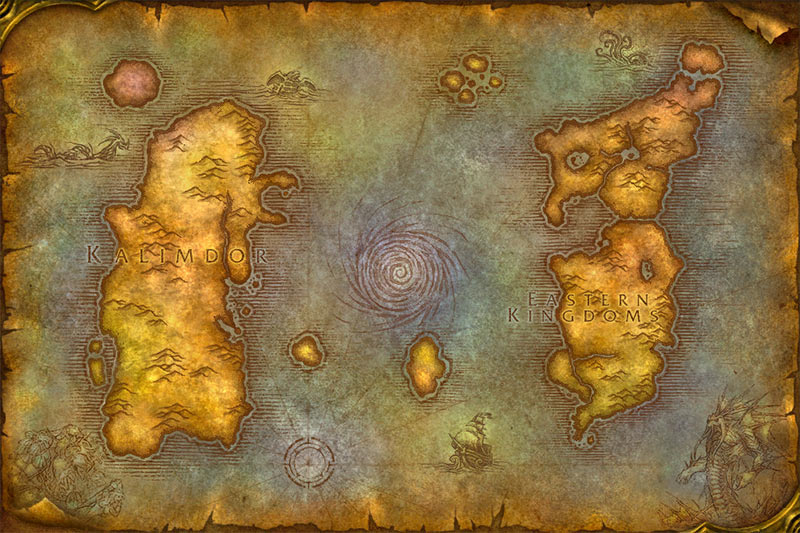
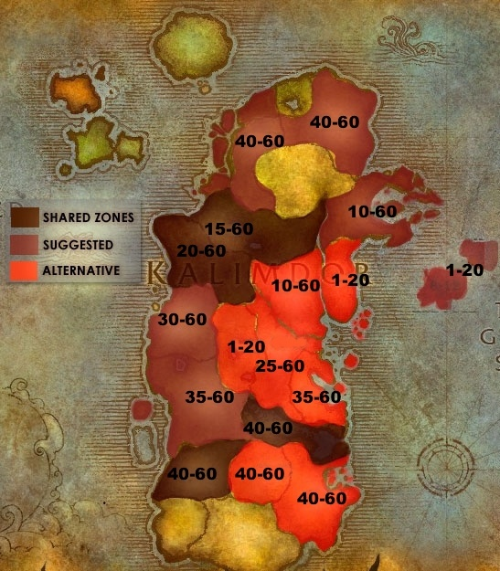
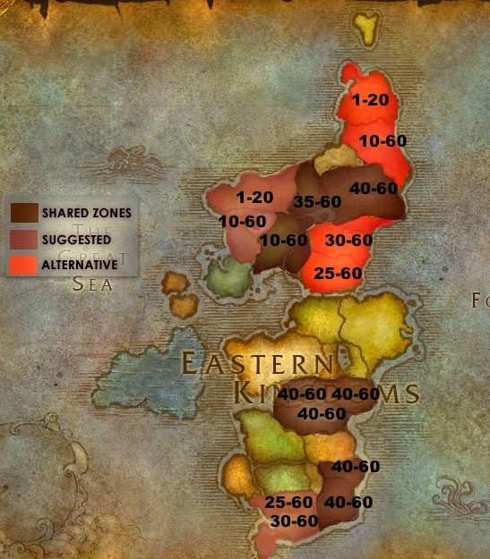
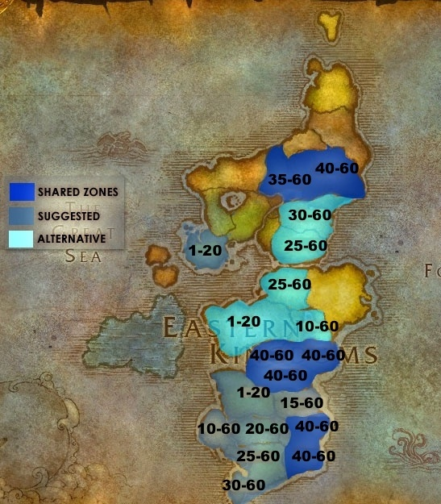
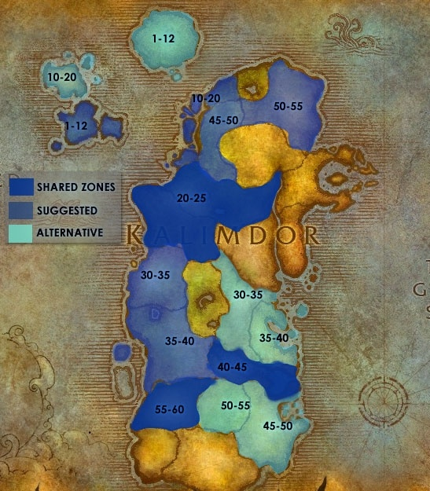

MAPA WOW 1.12.1
Descubre las Tierras de Kalimdor y los Reinos del Este Explora un mundo lleno de maravillas, misterios y aventuras. Este mapa muestra dos de las principales regiones del mundo fantástico de Azeroth: Kalimdor, un vasto continente al oeste, hogar de paisajes desérticos, junglas exuberantes y antiguas civilizaciones; y los Reinos del Este, una tierra rica en historia y cultura, marcada por reinos humanos, bosques élficos y montañas imponentes.
En el centro del mapa se encuentra el vórtice de Maelstrom, una cicatriz en el océano que cuenta historias de caos y cataclismos. Las islas dispersas alrededor del vórtice invitan a los más intrépidos a descubrir sus secretos.
Navega a través de estas tierras legendarias y prepárate para vivir aventuras épicas mientras te adentras en las maravillas que cada rincón tiene para ofrecer.
HORDA
Mapa de Kalimdor: Zonas de la Horda y Niveles Recomendados
Este mapa detalla las zonas principales en el continente de Kalimdor que están bajo el control o influencia de la Horda, marcando los niveles sugeridos para los jugadores que exploren estas regiones. Es una guía esencial para planificar tu progreso mientras te aventuras en este vasto continente.
Zonas Iniciales (1-20): Estas áreas, como Durotar y Mulgore, son perfectas para los nuevos héroes de la Horda. Aquí se encuentran las capitales de la facción, como Orgrimmar y Cima del Trueno, junto con misiones diseñadas para principiantes.
Zonas de Nivel Medio (10-60): Regiones como Los Baldíos (Northern y Southern Barrens) ofrecen desafíos adecuados para jugadores que han superado las áreas iniciales, con una mezcla de enemigos, mazmorras y tramas secundarias.
Zonas de Alto Nivel (30-60): Para los aventureros más experimentados, regiones como Feralas, Silithus y Desolace presentan enemigos poderosos, áreas inhóspitas y tramas épicas que pondrán a prueba tus habilidades.
Zonas Compartidas y Alternativas: Algunas áreas, como Azshara o Tanaris, son compartidas o sirven como rutas alternativas para completar misiones de diferentes niveles, dependiendo de tu estilo de juego.
Mapa de Reinos del Este: Zonas de la Horda y Niveles Recomendados
Este mapa muestra las zonas de los Reinos del Este que son relevantes para la Horda, junto con los niveles sugeridos para aventureros que deseen explorar este continente. Aunque los Reinos del Este son tradicionalmente territorio de la Alianza, la Horda tiene presencia estratégica en varias áreas clave.
Zonas Iniciales (1-20): Tirisfal Glades es el hogar de los Renegados y su capital, Entrañas. Es el punto de partida perfecto para los jugadores que eligen a los no-muertos, con misiones que revelan su oscura historia y su lucha por sobrevivir.
Zonas de Nivel Medio (10-60): Silverpine Forest y las Tierras Altas de Arathi ofrecen desafíos más avanzados y una transición natural desde las áreas iniciales. Estas zonas están llenas de enemigos de la Alianza y permiten a los jugadores experimentar los conflictos entre facciones.
Zonas de Alto Nivel (30-60): Las Tierras Fantasma y la Garganta de Fuego son áreas de importancia estratégica para la Horda, con misiones que giran en torno al conflicto con la Alianza y el fortalecimiento de sus fuerzas en los Reinos del Este.
Zonas Compartidas y Alternativas: En áreas como las Tierras de la Peste del Este y del Oeste, los jugadores de ambas facciones se enfrentan a amenazas mayores, como el Azote, que requieren la cooperación o competencia entre bandos.
ALIANZA
Mapa de Reinos del Este: Zonas de la Alianza y Niveles Recomendados
Este mapa detalla las áreas principales de los Reinos del Este controladas por la Alianza, marcando los niveles sugeridos para aventureros que deseen explorar estas tierras llenas de historia y conflictos.
Zonas Iniciales (1-20): Las regiones como Elwynn Forest, hogar de los humanos, y Dun Morogh, hogar de los enanos y gnomos, son ideales para los nuevos jugadores de la Alianza. Estas áreas incluyen capitales como Ventormenta y Forjaz, que ofrecen recursos, entrenadores y misiones introductorias para empezar tu viaje .
Zonas de Nivel Medio (10-60): Zonas como Loch Modan, Los Humedales y Bosque del Ocaso son perfectas para jugadores que han ganado algo de experiencia. Cada una de estas áreas tiene su propio carácter, desde los tranquilos lagos de Loch Modan hasta los oscuros misterios del Bosque del Ocaso.
Zonas de Alto Nivel (30-60): Regiones como Tierras de la Peste del Este y del Oeste presentan desafíos para jugadores veteranos. Aquí, los héroes lucharán contra el Azote, participarán en conflictos épicos y se prepararán para enfrentarse a enemigos poderosos.
Zonas Compartidas y Alternativas: Algunas áreas, como las Tierras Altas de Arathi, son escenarios de conflicto entre la Alianza y la Horda. Los jugadores encontrarán aquí misiones tanto PvE como PvP, ideales para probar sus habilidades.
Mapa de Kalimdor: Zonas de la Alianza y Niveles Recomendados
Este mapa muestra las áreas principales en el continente de Kalimdor que son controladas o influenciadas por la Alianza, junto con los niveles sugeridos para los aventureros que exploren estas regiones. Aunque Kalimdor es conocido como territorio mayoritariamente de la Horda, la Alianza mantiene una presencia significativa en puntos clave.
Zonas Iniciales (1-20): Teldrassil, hogar de los elfos de la noche, es una de las áreas iniciales de la Alianza en Kalimdor. Aquí se encuentra Darnassus, la majestuosa capital élfica, donde los jugadores pueden comenzar su aventura con misiones que exploran la conexión de los elfos con la naturaleza.
Zonas de Nivel Medio (10-60): Áreas como Costa Oscura (Darkshore) y Los Baldíos del Norte (Northern Barrens) ofrecen una progresión natural para los jugadores de nivel medio. Estas regiones están llenas de enemigos y desafíos que permiten a los aventureros desarrollar sus habilidades y recolectar equipo valioso.
Zonas de Alto Nivel (30-60): Regiones como Feralas y Mil Agujas (Thousand Needles) están llenas de aventuras para jugadores más avanzados. En estos lugares, los héroes lucharán contra enemigos poderosos y descubrirán historias fascinantes, además de enfrentar conflictos con las fuerzas de la Horda.
Zonas Compartidas y Alternativas: Algunas áreas, como Tanaris y Cuna del Invierno (Winterspring), son explorables por jugadores de ambas facciones y ofrecen retos importantes para quienes buscan subir de nivel rápidamente.
